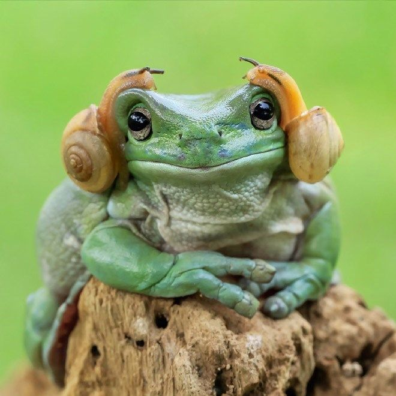

Лягушки
Лягушки — общеупотребительное название группы животных из отряда бесхвостых
земноводных.
В широком смысле термин «лягушка» относится ко всем представителям отряда бесхвостых. В узком смысле это
название применяется по отношению к представителям семейства настоящих лягушек.
